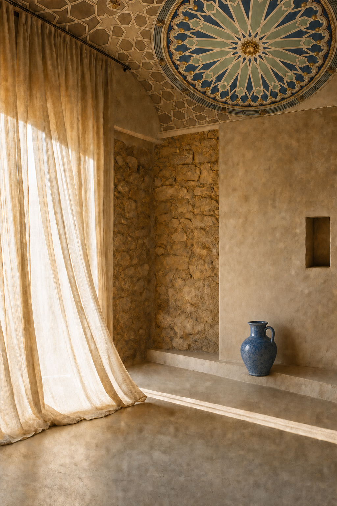
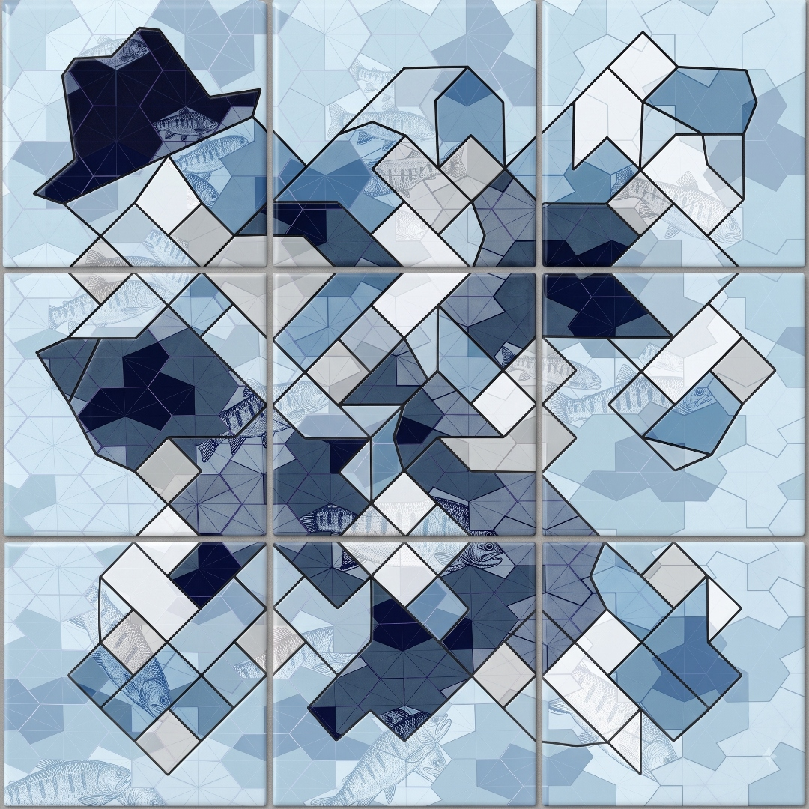
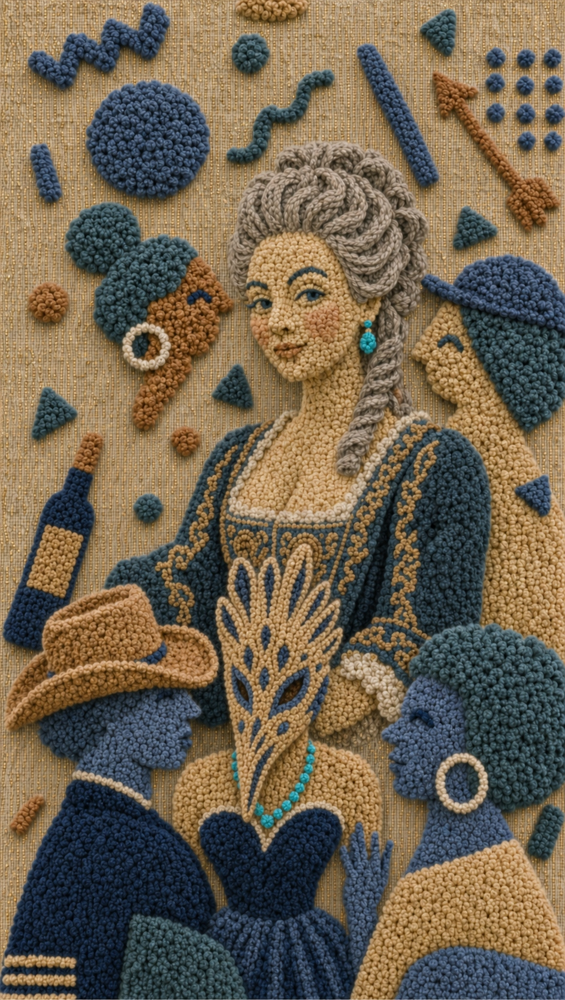

Space
Open →
01 — Space
A space is a memory waiting to be made.
Axis — O
Subtract the assumptions, the space tells you what it already wants to be. The void isn't the rival, it's the brief. Carrying delight without proving it. A space already contains the terms of its own answers — just be curious, find them.
We ask a pragmatic question first, we don't decorate space with meaning — we arrange the answers until a person standing in it understands it, the work is disclosure, not invention.
Constraint and delight are the same, subtract until only the truth is left standing, and let those terms be the whole.
Axis — E
A story everyone accepts has said nothing, so it will be forgotten. Take what already exists — a space as dance floor to tell that story, it doesn't need utility, or permission, to delight. Strip a space down, be deliberate, leave nowhere to hide — plaster over its certainty.
Be not interested in what a room is supposed to do. Let the potential in. The dancefloor doesn't change; only what you're willing to believe about it changes, and occupying that aperture is the entire tune. Don't explain the trick, just feel the floor of your own assumptions give way — unsteadiness is the actual design.
Be not interested in resolving contradictions. Widen that gap deliberately — a space that has been made perfectly consistent has been made forgettable.

To
Open →
02 — To
To is a memory in motion.
Axis — O
A passage is a floor before it is a metaphor, a span it must hold. Movement doesn't need to mean anything to carry the load — it only needs to reach out in cadence; the meaning arrives on its own.
Do not decorate the crossing; let the stability be felt, as a kind of arrival. Thresholds need not announce — the ascent tells you. Subtract the ceremony, and the bridge's one moment is getting from memory to possibility.
Axis — E
Don't explain or name the moment — once you call out what's on the other side, you've stopped crossing. You are meant to feel the gap open to uncertainty. You're already leaving and not yet arrived — neither moment owns you. The bridge doesn't resolve; it holds you in motion.
Cross over →

Place
Open →
03 — Place
A Place To Gather is where memories live.
All Axes
Place is the point where all axes meet. Space resolves to structure. A gathering resolves to feeling. And where they meet, memory resolves and becomes place.
A memory can hold a gathering. Here, all are welcome, and you know you have arrived.
Arrive →
Est. 2026 · Late Summer
CH
O
RALIEU
Space
To
Place
✕
Arrive